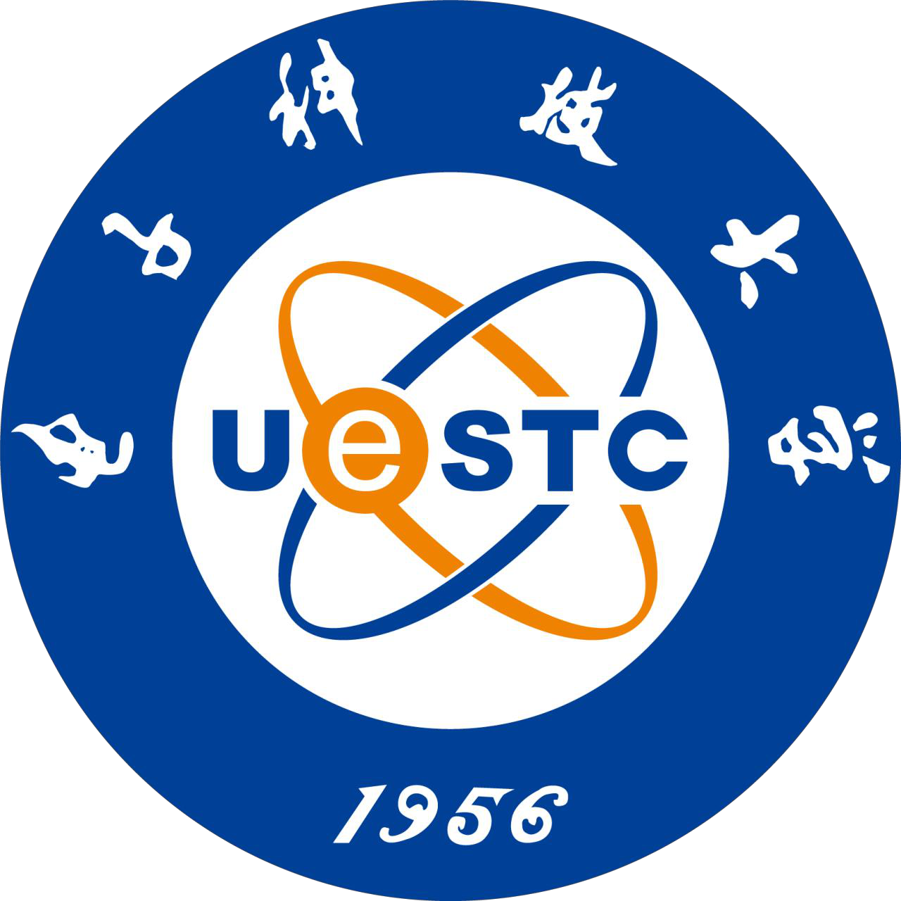
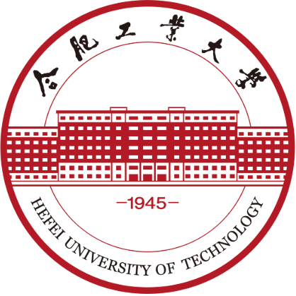

Joint Geometric and Trajectory Consistency Learning for One-Step Real-World Super-Resolution
Trajectory alignment and dual-reference structural constraints for faithful one-step image restoration.
I am Chengyan Deng, a third-year master’s student in Control Engineering at the University of Electronic Science and Technology of China (UESTC), advised by Prof. Li Yu. I am also fortunate to work as a research assistant at Nanjing University under the guidance of Prof. Kai Zhang. After graduation, I will pursue a Ph.D. at Tsinghua University under the supervision of Prof. Wenming Yang.
I am currently a research intern at Huawei Noah’s Ark Lab and previously interned at OPPO AI Center. I received my B.Eng. in Automation from Hefei University of Technology.
My current research focuses on image and video generation. Previously, I worked on image super-resolution.
Looking for collaboration, kindly contact me via email.
Trajectory alignment and dual-reference structural constraints for faithful one-step image restoration.
Importance-guided hierarchical scanning and dynamic prompts for efficient, structure-aware super-resolution.
Full-image 4K super-resolution in one step, with RoPE frequency rescaling and periodic artifact suppression.
![Huawei logo]()
Image Generation Research Intern
AIGC Algorithm Research Intern
Research Assistant · School of Intelligence Science and Technology · Prof. Kai Zhang
Ph.D. (incoming)
Sep. 2027 — Jun. 2031 (expected)

M.Eng.
Sep. 2024 — Jun. 2027 (expected)

B.Eng.
Sep. 2020 — Jun. 2024
国家奖学金
华为终端 Camera 学术之星
安徽省优秀毕业生